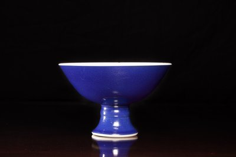

The Cong Vase, the Stem Cup, and the Splendour of Sacrificial Blue
Among the monochrome glazes that distinguish Qing Dynasty porcelain production, few command the same quiet authority as sacrificial blue. Known in Chinese as jilan (祭藍) — a name that references its use on ritual vessels for the Temple of Heaven — this deep, lustrous cobalt glaze represents one of the most technically demanding achievements of the Jingdezhen kilns. When applied to forms that deliberately evoke the archaic past, such as the jade-inspired cong vase or the elegant stem cup, blue monochrome porcelain achieves a synthesis of antiquarian reverence and ceramic mastery that is uniquely Chinese.
The origins of monochrome blue glazed porcelain reach back to the Xuande period (1425–1435) of the Ming Dynasty, when this glaze was ranked among the three supreme achievements of the imperial kilns, alongside sacrificial red (jihong) and sweet white (tianbai). The designation "sacrificial" derives from the glaze's association with vessels produced for state ceremonies at the Altar of Heaven in Beijing, where blue — the colour of the firmament — was liturgically prescribed.
Unlike the mottled surface of powder blue, which was produced by blowing cobalt through gauze, sacrificial blue was achieved by incorporating cobalt oxide directly into the glaze mixture, which was then applied to the porcelain body in a uniform coating. The result, when successfully fired at high temperature, was a surface of remarkable depth and evenness — a blue so saturated it appeared almost to absorb light, yet with an inner luminosity that seemed to emanate from within the glaze itself. The finest examples possess a quality that period connoisseurs likened to the colour of lapis lazuli or the deepest sapphire.
Production of this glaze continued without interruption from the Ming through the Qing Dynasty, reaching particular refinement during the reigns of the Kangxi (1662–1722), Yongzheng (1723–1735), and Qianlong (1736–1795) Emperors. The Kangxi Emperor's appointment of Zang Yingxuan as superintendent of the imperial kilns in 1682 initiated a period in which monochrome glazes of all descriptions were brought to new levels of excellence.
The cong (琮) vase represents one of the most intellectually compelling forms in Chinese ceramics, for it translates into porcelain a shape whose origins lie in Neolithic jade ritual objects. The original jade cong — a tube with a circular interior bore and squared exterior — was produced by the Liangzhu culture as early as 3000 BCE and appears to have served a function in mortuary rites whose precise meaning remains debated by scholars. By the time of the Song Dynasty, the form had entered the antiquarian imagination as an object of profound symbolic weight, associated with the earth and with the passage between the terrestrial and celestial realms.
Qing Dynasty potters embraced the cong form with particular enthusiasm, producing versions in a range of monochrome glazes. The application of elephant-head handles — modelled in relief at the shoulders of the vessel — introduces a further layer of symbolic meaning. The elephant, or xiang (象), is a homophone of the character for "auspicious sign" or "manifestation," making it a potent emblem of good fortune. In the Buddhist tradition, which profoundly influenced Qing court culture, the white elephant was additionally associated with the Buddha's birth. The conjunction of an archaic jade form, Buddhist symbolism, and the imperial blue glaze creates an object of remarkable cultural density.
When cloaked in sacrificial blue, the cong vase achieves an effect of austere grandeur. The glaze pools slightly in the recesses of the moulded elephant heads and along the squared edges of the form, producing subtle tonal variations that enliven what might otherwise be an unrelieved surface. The base, typically left unglazed or dressed in a pale biscuit, provides a counterpoint that emphasises the intensity of the blue.
If the cong vase speaks to antiquarian reverence, the stem cup (bazhan, 把盏) embodies courtly elegance. This form — a shallow, flared bowl set upon a tall, spreading foot — has been a staple of the Chinese ceramic repertoire since the Yuan Dynasty and was adopted by the Qing potters for vessels of considerable refinement. In blue monochrome, the stem cup takes on a quality of almost jewel-like preciousness, the deep cobalt glaze unifying the bowl and foot into a single, seamless surface.
The presence of a reign mark on the base of a blue monochrome stem cup is a detail of considerable significance. Imperial reign marks — typically consisting of six characters reading, for example, Da Qing Kangxi Nian Zhi ("Made in the Great Qing Dynasty during the reign of the Kangxi Emperor") — were applied in underglaze blue before the cobalt glaze was laid over the entire vessel. The mark thus lies beneath the blue ground, legible only when the cup is inverted and viewed with care. This subtlety is itself revealing: the mark was not intended as a display of provenance for public consumption but as a quiet assertion of imperial ownership and kiln supervision.
During the Kangxi period, the Emperor issued an edict in 1667 forbidding the use of his reign mark on porcelain, for fear that imperfect pieces bearing the imperial name might be discarded and desecrated. This resulted in a period during which many porcelain marks consisted of empty double circles in underglaze blue, or auspicious symbols such as the artemisia leaf. The subsequent resumption of reign marks, particularly in the refined zhuanshu (seal-script) form favoured from the Yongzheng period onward, makes marked stem cups valuable documents of imperial kiln practice.
The assessment of blue monochrome glazed porcelain requires a trained eye and, ideally, the opportunity to examine comparable museum examples. The key qualities to evaluate include the uniformity and depth of the glaze, the precision of the potting, and the treatment of the foot rim.
A successfully fired sacrificial blue should present a surface of consistent depth and saturation, free from the pinholing, crawling, or unevenness that plagued less accomplished firings. The glaze should possess a certain "fatty" quality — a richness of surface that suggests depth without sacrificing lustre. Under strong raking light, the finest examples may reveal a subtle network of tiny bubbles within the glaze matrix, evidence of the high-temperature firing process.
The foot rim, where the glaze terminates, is a critical diagnostic area. On imperial pieces, the line at which the blue glaze meets the unglazed or white-glazed foot should be clean and precise, reflecting the care with which the glaze was applied. The biscuit itself — the unglazed porcelain body visible at the foot — should be fine-grained, dense, and white, consistent with the high-quality kaolin bodies produced at Jingdezhen for imperial commissions.
Blue monochrome glazed porcelain occupies a singular position in the collector's landscape. These wares demand appreciation on their own terms — not for the narrative complexity of painted decoration or the brilliance of polychrome enamels, but for the marriage of form and glaze in its purest expression. A fine cong vase or stem cup in sacrificial blue offers the viewer an experience closer to sculpture than to painting: one apprehends the object as a whole, responding to the interplay of volume, surface, and colour that defines its character.
In this, blue monochrome wares embody a sensibility that resonates as powerfully in the twenty-first century as it did in the imperial courts of the Qing. Their clean forms and saturated surfaces speak a visual language that transcends period and culture — a quality that has ensured their place in the collections of major institutions worldwide, from the Palace Museum in Beijing to the Victoria and Albert Museum in London.
The Chinese Heritage has offered fine Chinese antiques, including blue monochrome glazed porcelain from the Qing Dynasty, since 1978. Visit our gallery at Lucky Plaza, Orchard Road, Singapore.